Brian Arbachouskas
Founder and Programmer
Building practical software and data solutions with a service-driven perspective.
Founder Story
Arbachouskas Group is currently a one-person company built on service, technical growth, and a commitment to doing meaningful work well.
Brian's professional path has been shaped by service. His past work in the Navy helped build the discipline, accountability, and mission focus that still guide how he approaches technical work today.
That commitment did not end with military service. He continues serving his community through his work as a programmer for a school district, helping support the systems and tools that contribute to better outcomes for students, staff, and families.
Brian holds an advanced math degree in Actuarial Science, a background that sharpened his ability to reason quantitatively, model complex problems, and work comfortably with data.
That foundation has supported his continued professional development across software engineering, data science, and data analytics. It also informs how he breaks down ambiguous problems into practical, measurable work.
Today, Arbachouskas Group reflects a blend of programming, analytics, and data engineering work. The goal is to create solutions that are not only technically sound, but genuinely useful to the people who rely on them.
Whether the work involves application development, reporting, automation, or data pipelines, the approach stays the same: understand the real need, design with care, and deliver something dependable.
Data-focused projects are an important part of Brian's work and a natural extension of his mathematical background. He is especially interested in projects where data can clarify decisions, reveal patterns, and improve how organizations operate.
This includes work in analytics, reporting, exploratory analysis, and data-informed software solutions. As the portfolio grows, Arbachouskas Group will continue highlighting data science projects that demonstrate both technical depth and practical value.
Educational Foundations
